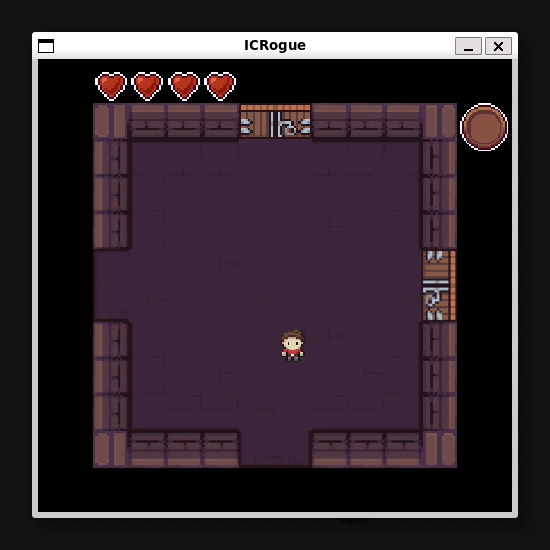

Chauffeur-livreur
- Livraison de colis et courses alimentaires
- Distribution des actes de poursuites
Étudiant informatique · 42 Lausanne
$ uptime
> 25 ans
$ ls ./skills
> C C++ Java ...
$ cat status.txt
> Disponible pour un stage dès fin septembre 2026
$ whereami
> Fribourg / Bulle, Suisse
Depuis tout petit, j'aime l'informatique et la tech. Après une maturité gymnasiale au Collège de Gambach, je suis passé par l'EPFL puis la HEIA-FR, deux pistes très scolaires qui ne m'ont finalement pas plu : je n'avais juste pas trouvé le bon chemin pour exprimer ma passion. C'est pourquoi je me suis tourné vers l'école 42, sans cours ni professeurs, où on apprend par projets et par les pairs, en totale autonomie, une pédagogie qui matche totalement ma façon de penser. Et j'adore ça.
Pour gagner en indépendance, j'ai aussi enchaîné plusieurs emplois depuis 2016 : au restaurant L'Unique à La Roche, régulièrement chaque été selon ma disponibilité, puis à temps plein au McDonald's d'Avry entre 2021 et 2023 et à la base de distribution de Givisiez de La Poste durant l'année 2024. Maintenant je me consacre surtout à mon apprentissage dans l'IT.
En dehors du code, mon travail en restauration m'a donné une vraie passion pour la cuisine, que je préfère garder comme passion plutôt qu'en faire mon métier. J'aime aussi les jeux vidéo compétitifs, la plongée (certifié Open Water depuis 2019), la musique, le voyage et le fitness.
2017-2021 : maturité gymnasiale au Collège de Gambach (Fribourg), option renforcée mathématiques, option spécifique physique et application des maths, option complémentaire informatique. Puis un passage par l'EPFL et par la Haute École d'Ingénierie et d'Architecture de Fribourg (HEIA-FR), avant de rejoindre 42 Lausanne.
Piscine, puis tronc commun. Sur le point d'attaquer le projet final Transcendance, dernière étape avant la fin du cursus.
Recherche d'un stage informatique dans le canton de Fribourg (Fribourg / Bulle), pour environ fin septembre 2026, dates flexibles.
Serveur HTTP/1.0 non-bloquant développé en C++98 avec un binôme, en suivant un CONTRIBUTING.md strict (branches de fonctionnalités, commits conventionnels, revues de code obligatoires). Gestion du multiplexage de sockets (poll) et exécution CGI.
Voir le repo ↗Mise en place d'une infrastructure complète avec Docker : images personnalisées pour Nginx, WordPress et MariaDB, orchestrées dans un réseau Docker dédié.
Voir le repo ↗Recréation d'un shell façon Bash à partir de zéro : lexer/parser maison (AST) gérant les processus enfants, pipes, redirections (<, <<, >, >>), opérateurs logiques (&&, ||), sous-shells et wildcards.
Voir le repo ↗Résolution du problème des philosophes autour d'une table (dining philosophers). Gestion de threads concurrents avec prévention des race conditions et des deadlocks via des mutex.
Voir le repo ↗
Dungeon crawler roguelike en Java sur un moteur de grille 2D : génération procédurale de niveaux, ennemis, armes, architecture orientée objet encapsulée.
Voir le repo ↗Encodeur/décodeur bas niveau pour le format d'image sans perte QOI, manipulant opérateurs bit à bit, arithmétique modulaire et tables de hachage.
Voir le repo ↗Projet final du tronc commun à 42 Lausanne, en équipe. Démarrage imminent. Cette carte sera mise à jour une fois le projet lancé.
Voir le repo ↗Oui, c'est la seule vraie exigence de 42.
4 à 6 mois à temps plein, minimum 4 mois pour être validé par 42. Toujours après la fin du tronc commun, aux dates qui conviennent aux deux parties.
Un·e maître de stage / référent·e présent·e pour encadrer l'étudiant·e.
Développement front, back, full-stack, administration système, algorithmique, IA/ML... tant qu'un·e maître de stage est présent·e pour l'aiguiller.
2 formulaires web courts remplis par le référent (mi-stage et fin de stage, ~15 min chacun). Charge administrative minimale.
Un contrat de travail standard suffit, comme pour n'importe quel·le salarié·e. La convention de stage formalise l'expérience côté 42. Aucun document supplémentaire à fournir.
Documentation complète : PDF officiel 42 Lausanne ↗